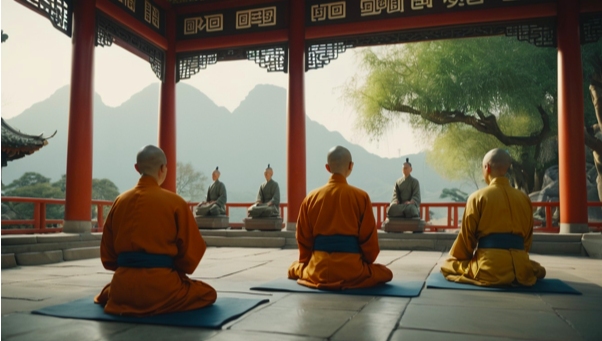

El Tao es un concepto fundamental en el taoísmo, una filosofía y tradición espiritual china.
La palabra "Tao" (o Dao) se traduce comúnmente como "El Camino" o "La Vía". Representa la fuerza
cósmica que fluye a través de todo y es la esencia que subyace en el universo.
En la filosofía taoísta, el Tao es incomprensible y sin forma, pero se manifiesta en todas las cosas.
La obra clásica "Tao Te Ching", atribuida a Laozi, es una fuente clave que expone los principios del taoísmo.
La filosofía taoísta aboga por la simplicidad, la armonía con la naturaleza y el concepto de "Wu Wei",
que significa acción no forzada o esfuerzo mínimo.
La filosofía del taoísmo se expresa en textos antiguos como el "Tao Te Ching". Aboga por la simplicidad, la moderación y la adaptación natural a las circunstancias. El concepto de "Wu Wei", o acción no forzada, sugiere que las mejores acciones son aquellas que se realizan con esfuerzo mínimo y sin resistencia. Esto no implica la inactividad total, sino más bien actuar de manera espontánea y en armonía con el flujo natural del Tao para no interferir con el curso natural de las cosas.